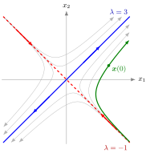

where xi′(t)=dtdxi(t). With the state vectorx(t)=(x1(t),…,xn(t))⊤ it reads x′(t)=f(t,x(t)). The system is linear if
x′(t)=A(t)x(t)+b(t)
for an n×nmatrix function A(t) and a vector function b(t); it is coupled if some xi′ depends on some xj with j=i. An initial value problem prescribes the whole vector x(t0)∈Rn.
A system describes several interacting quantities, such as two competing populations or prices in linked markets. In the linear case the matrix productAx packs all couplings into one coefficient matrix; the entry aij measures how xj affects the rate of change of xi.

The figure shows the coupled example below in the (x1,x2) plane. Along the eigenvector (1,1)⊤ (blue, λ=3) solutions move outwards like e3t, along (1,−1)⊤ (red, λ=−1) they move inwards like e−t, and every other solution (grey) combines the two. The green curve is the solution with x(0)=(3,1)⊤: it comes in near the (1,−1)⊤ line and then leaves in the (1,1)⊤ direction. Neither coordinate can be solved on its own, but in eigenvector coordinates the two motions separate.
Every scalar equation of order n is a first-order system in disguise: with y1=x, y2=x′, ..., yn=x(n−1) the equation x(n)=f(t,x,…,x(n−1)) becomes y1′=y2,…,yn−1′=yn,yn′=f(t,y1,…,yn). For a second-order differential equation this gives a two-dimensional system. So first-order systems are the general framework, and one theory covers all orders.
Coupling is what makes systems harder than n separate scalar equations. For constant, diagonalizableA the eigenvalues and eigenvectors remove it: a coordinate change along eigenvectors turns the system into decoupled scalar equations. A common error is to solve each row as if the other variables were constants. The discrete-time counterpart is the system of linear difference equationsxt+1=Axt.
Aliases: system of ODEs, coupled differential equations, system of ordinary differential equations
Keywords: x'(t)=f(t,x(t)), first-order system, companion matrix, decoupling, state vector
Symbols: element of, lambda, real numbers, sum
Last updated: 16 October 2026 22:28
System of Differential EquationsLinear Vector ODEFirst-Order Differential EquationMatrix ProductEigenvalue and EigenvectorDiagonalizationMatrix ExponentialSecond-Order Differential EquationSystem of Linear Difference Equations